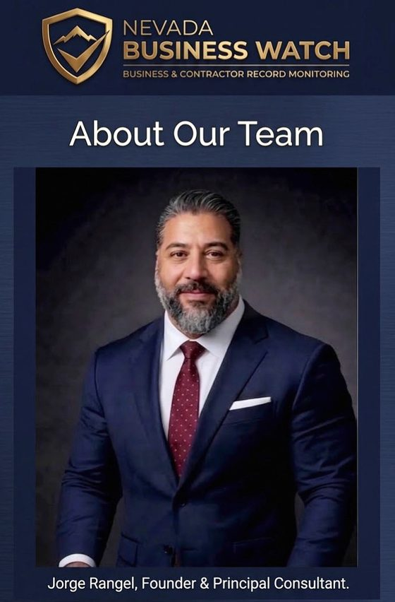

Acerca de Nevada Business Watch
01 — El Problema
Su negocio tiene más papeleo del que usted cree.
Un negocio puede tener registros repartidos entre portales estatales, sistemas de licencias municipales, agentes de seguros, juntas de contratistas, buzones de correo electrónico y archiveros.
Nosotros reunimos las piezas importantes.
02 — Acerca de
Acerca de Nevada Business Watch
Toda empresa en Nevada arrastra un rastro de papeleo — licencias, registros, permisos, documentos de seguro, renovaciones y trámites gubernamentales. Creamos Nevada Business Watch para mantener ese rastro en orden.
Muchos dueños de negocio no necesitan otra plataforma de software. Necesitan a alguien que les ayude a organizar la información, dar seguimiento a fechas importantes e identificar asuntos que puedan necesitar atención. Nevada Business Watch ofrece monitoreo administrativo directo y apoyo de investigación para negocios, contratistas y organizaciones sin fines de lucro de Nevada.
- No somos un bufete de abogados.
- No somos una firma de contabilidad.
- No somos una agencia de seguros.
- No somos una plataforma de software.
Somos apoyo administrativo directo y personal.
Conozca al Fundador

Jorge Rangel
Fundador y Consultor Principal
Nevada Business Watch · Inglés y Español
Jorge Rangel aporta más de 30 años de experiencia trabajando en entornos militares, federales, policiales y regulatorios. Su carrera se ha enfocado en revisar registros, investigar información, manejar casos, analizar registros de negocios y financieros, e identificar detalles que de otro modo podrían pasar desapercibidos.
Hoy, aplica esa experiencia para ayudar a los negocios y contratistas de Nevada a mantenerse organizados, informados y preparados.
Nevada Business Watch ofrece apoyo administrativo directo enfocado en registros de negocio, información de licencias, renovaciones, organización de documentos, investigación de negocios, información de contratistas y otros asuntos administrativos que puedan requerir atención.
Educación y Formación
- Maestría en Administración Pública (MPA), University of Phoenix
- Licenciatura en Administración de Empresas, University of Phoenix
- Academia Nacional del FBI — Introducción a la Inteligencia para Analistas de Inteligencia
- Certificación POST (Normas y Capacitación para Oficiales de Paz), Oficial de la Ley del Estado de Nevada
Nevada Business Watch LLC es una empresa privada. No está afiliada ni respaldada por ninguna agencia gubernamental.
Lo Que Aportamos a Su Negocio
- Investigación de negocios y registros públicos
- Verificación de información de negocios y contratistas
- Revisión de registros y documentos
- Seguimiento de licencias y renovaciones
- Organización de expedientes de negocio y contratista
- Investigación administrativa
- Identificación de información faltante o inconsistente
- Investigación de información gubernamental y de agencias
- Recordatorios de documentos y renovaciones
- Apoyo administrativo directo y personal
Nuestro Enfoque
Dirigir un negocio implica más que atender clientes. Los dueños de negocio, contratistas y líderes de organizaciones sin fines de lucro también deben llevar el control de licencias, registros, permisos, documentos de seguro, información de compensación para trabajadores, renovaciones, correspondencia gubernamental y otros registros.
Nevada Business Watch ayuda a organizar esa información y a monitorear los asuntos que usted nos pida rastrear.
Revisamos la información disponible, organizamos los registros de negocio, damos seguimiento a fechas y documentos importantes, e identificamos asuntos que puedan necesitar atención.
Usted dirige su negocio. Nosotros le ayudamos a llevar el control del papeleo detrás de él.
Servicio Personal y Directo — No Solo Otra Plataforma de Software
Nevada Business Watch está diseñado para dueños de negocio y líderes de organizaciones sin fines de lucro que quieren una persona real ayudándoles, no otro sistema de software complicado que tengan que aprender y administrar ellos mismos.
Usamos tecnología para organizar la información y comunicarnos con los clientes, pero el servicio es directo y personal.
Usted puede trabajar directamente con nosotros para organizar la información de su negocio, enviar documentos, solicitar investigaciones y llevar el control de los asuntos que puedan necesitar atención.
Al Servicio de Negocios y Contratistas de Nevada
Trabajamos con pequeños negocios, contratistas, organizaciones sin fines de lucro y dueños de negocio en todo Nevada. Nuestros servicios pueden ser especialmente útiles para negocios que necesitan ayuda para llevar el control de:
- Licencias y registros de negocio
- Licencias comerciales locales
- Información de contratista
- Documentación de seguros
- Documentación de compensación para trabajadores
- Permisos y renovaciones
- Registros de negocio
- Correspondencia gubernamental
- Información de proveedores y contratistas
- Fechas importantes del negocio
- Seguimiento administrativo
Inglés y Español
La información de su negocio debe ser comprensible y accesible. Nevada Business Watch ofrece servicio y comunicación en inglés y español.
Negocio Privado e Independiente
Nevada Business Watch es un negocio privado e independiente.
Las referencias a la experiencia militar, federal, policial y gubernamental estatal de Jorge Rangel se proporcionan únicamente para describir sus antecedentes y experiencia profesional. No representan un respaldo, patrocinio, afiliación ni relación oficial con el Gobierno de los Estados Unidos, el Estado de Nevada, la División de Relaciones Industriales de Nevada, el Servicio de Impuestos Internos, la Marina de los Estados Unidos, el Departamento de Policía Metropolitana de Las Vegas, ni ninguna otra agencia, departamento u organización gubernamental.
Nevada Business Watch no brinda asesoría legal, fiscal, contable, de seguros ni regulatoria profesional. Nuestros servicios son administrativos y de investigación, y tienen como objetivo ayudar a los clientes a organizar información, monitorear ciertos registros y fechas, e identificar asuntos que puedan necesitar atención.
Nuestro Compromiso
Información clara. Registros organizados. Servicio personal.
Ayudamos a los dueños de negocio y líderes de organizaciones sin fines de lucro de Nevada a pasar menos tiempo buscando entre papeles y más tiempo enfocados en su misión.